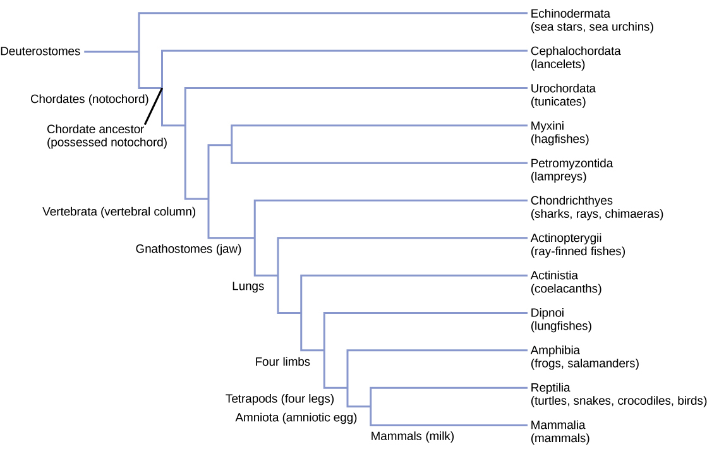

五、脊索动物的起源与进化
脊索动物究竟由哪一个门类的无脊椎动物进化而来，是近百年来学者研究的重要课题。由于化石种类不足，人们只能借助比较解剖学、胚胎学、分子生物学等手段进行研究、分析和推断，提出了多种假说。其中两个最重要的假说是环节动物说和棘皮动物说。
（一）环节动物说
环节动物说认为脊索动物起源于环节动物。主要理由：
- 两类动物都是两侧对称和分节的；
- 都有分节的排泄器官（环节动物的后肾管 vs 脊索动物的肾管）；
- 都有发达的体腔；
- 都是密闭式的循环系统。
此外，环节动物的背、腹部与脊索动物的腹、背部器官存在许多一一对应的相似方面（即环节动物的"背"对应脊索动物的"腹"，反之亦然，仿佛身体翻转）。
（二）棘皮动物说（主流学说，重点）
棘皮动物说认为脊索动物和棘皮动物来自共同的祖先，由此分三支演化：
- 一支侧支进化为棘皮动物；
- 另一支侧支进化为半索动物；
- 主干进化为脊索动物。
主要理由（四方面证据）：
- 胚胎发育均为后口动物（胚孔发育为肛门，口另开），与一般无脊椎动物（原口动物）不同，而与脊索动物近似。
- 均以体腔囊法（肠体腔法）形成体腔——由原肠壁突出体腔囊发育成体腔，而非裂体腔法。
- 幼体极为相似：棘皮动物的幼体（如海胆长腕幼虫）与半索动物的幼体（柱头幼虫）在形态结构上极为相似，提示共同起源。
- 生化证据：棘皮动物和半索动物的肌肉中同时含有磷酸肌酸和磷酸精氨酸——前者是脊索动物特征、后者是无脊椎动物特征，说明二者处于无脊椎动物（仅有磷酸精氨酸）和脊索动物（仅有磷酸肌酸）之间的过渡地位。海胆个体发育中，初期出现磷酸精氨酸，后期出现磷酸肌酸，更印证了这一过渡。

（三）脊索动物的演化路径
现有更多学者赞同棘皮动物说，并认为脊索动物的演化过程为：
蠕虫状的后口动物（即原始无头类） → 原索动物（即原始有头类，脊椎动物祖先） → 现代脊椎动物
即由原始无头类（蠕虫状后口动物）进化为原始有头类（脊椎动物祖先，可能类似头索动物的过渡型），再演化为现代各纲脊椎动物（圆口纲、鱼纲、两栖纲、爬行纲、鸟纲、哺乳纲）。
| 项目 | 环节动物说 | 棘皮动物说（主流） |
|---|---|---|
| 起源类群 | 环节动物 | 与棘皮动物共同祖先 |
| 主要证据 | 两侧对称、分节、分节排泄、发达体腔、闭管循环、背腹翻转 | 后口、体腔囊法、幼体相似、磷酸肌酸+磷酸精氨酸 |
| 胚孔命运 | 环节动物为原口（与脊索动物后口矛盾） | 均为后口（一致） |
| 体腔形成 | 裂体腔法（与脊索动物不同） | 体腔囊法（与脊索动物一致） |
| 生化证据 | 仅磷酸精氨酸（与脊索动物不同） | 磷酸肌酸+磷酸精氨酸（过渡型） |
| 学界认可度 | 较低（已少用） | 高（主流） |
（四）关键概念辨析
原口动物 vs 后口动物：原口动物（环节、节肢、软体等）胚孔发育为口；后口动物（棘皮、半索、脊索动物）胚孔发育为肛门，口另行形成。这是动物界两大演化主线。
裂体腔法 vs 体腔囊法：原口动物多由中胚层细胞裂开形成体腔（裂体腔法 schizocoely）；后口动物由原肠壁突出体腔囊发育成体腔（体腔囊法/肠体腔法 enterocoely）。
原始无头类 vs 原始有头类：原始无头类指尚无明显的头和脑的祖先型（蠕虫状后口动物）；原始有头类指已出现头部和脑的脊椎动物祖先。文昌鱼等头索动物被视为二者间的过渡型。
本节小结
1. 脊索动物起源两假说：环节动物说（旧、依据形态相似与背腹翻转）与棘皮动物说（主流）。
2. 棘皮动物说要点：脊索动物与棘皮动物、半索动物共同起源于后口动物祖先，分三支演化。
3. 棘皮动物说四大证据：后口、体腔囊法、幼体相似、磷酸肌酸+磷酸精氨酸。
4. 生化过渡证据：无脊椎动物（磷酸精氨酸）→ 棘皮/半索（二者兼具）→ 脊索动物（磷酸肌酸）。
5. 演化路径：蠕虫状后口动物（原始无头类）→原索动物（原始有头类，脊椎动物祖先）→现代脊椎动物。
6. 文昌鱼作为头索动物，是从无脊椎到脊椎动物的过渡型（姐妹群），是研究脊索动物起源的关键参照。